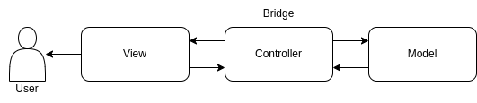

API Reference
MVC module
Model–view–controller (MVC) is a software architectural pattern[1] commonly used for developing user interfaces that divide the related program logic into three interconnected elements. This is done to separate internal representations of information from the ways information is presented to and accepted by the user.
{kind=link}
- class Model[source]
Bases:
objectThe backend that contains all the data logic. The model’s job is to simply manage the data. Whether the data is from a database, API, or a JSON object, the model is responsible for managing it.
- property parameter_path
This function is to get image original from instruction controllers mvc model
- Returns
parameter_path = load image
- class View(*args: Any, **kwargs: Any)[source]
Bases:
Ui_MainWindowThe frontend or graphical user interface (GUI). The view’s job is to decide what the user will see on their screen, and how.
- Parameters
model – The backend that contains all the data logic
controller – The brains of the application that controls how data is displayed
- class Controller(model)[source]
Bases:
objectThe controllers class is The brains of the application that controls how data is displayed. The controller’s responsibility is to pull, modify, and provide data to the user. Essentially, the controllers is the link between the view and model.
- Parameters
model – The backend that contains all the data logic